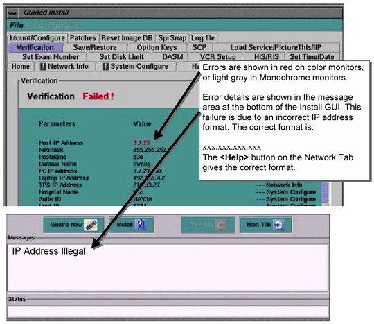

| NOTE: | It is not necessary that any one tab be filled out in any particular order. Just all required configuration tabs must be filled in or the install will not continue. The Verification Tab will list any formatting errors as well as current settings. See Illustration 5 for an example of a failure in the Verification Tab in networking (in the example, the Host IP Address is an incorrect format). This verification is not as complete as the Service Desktop Browser configuration verification. |
Illustration 5: GUIDED INSTALL - VERIFICATION SCREEN
